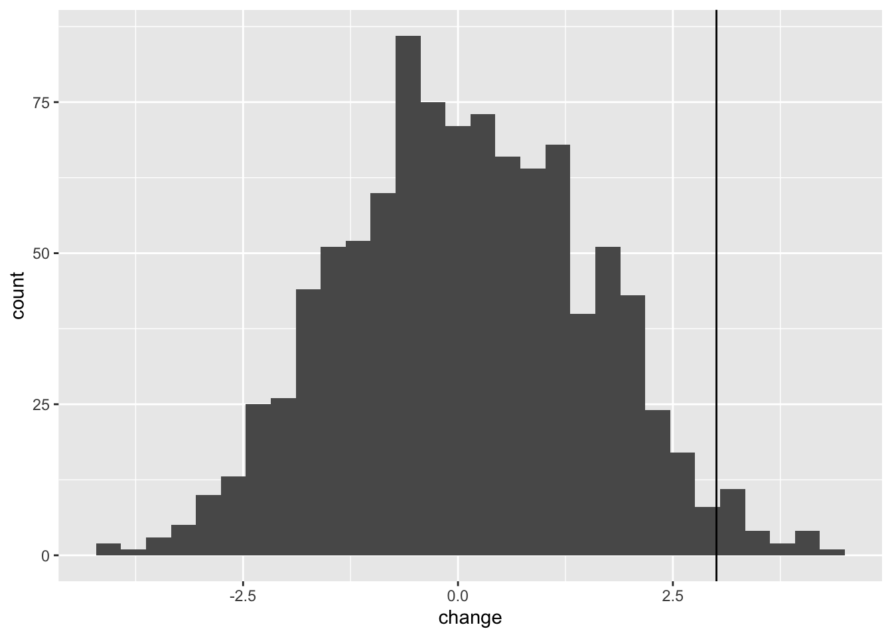

Chapter 8 Randomisation Tests
8.1 Introduction
Simple experiments testing for a difference in mean values between two groups usually have the null hypothesis that there is no difference. The alternative hypothesis varies. Sometimes it is simply that the two groups are different (and that the difference could be wither positive or negative). In other cases the alternetive hypothesis is that the mean of Group A is less then the mean of Group B (or that it is greater).
Randomisation tests are an intuitive, but computationally intensive way of testing these hypotheses. They have a long history and were first proposed by R.A. Fisher in the 1930s. However they only became convenient when computers became sufficiently fast to do the calculations.
Carrying out a test in R requires that you put your dplyr skills to the test. Here you will be guided through an example.
8.2 The example
A new drug has been developed that is supposed to reduce cholesterol levels in men. An experiment has been carried out where 12 human test subjects have been assigned randomly to two groups: “Control” and “Drug”. The pharmaceutical company is hoping that the “Drug” group will have lower cholesterol than the “Control” group. The aim here is to do a randomisation test to check that.
8.3 Setting up
First you need to load the tidyverse libraries required (we’ll be making use of dplyr, magrittr and ggplot which are all included in the tidyverse set of packages.
library(tidyverse)Next, import the data, called cholesterol. Note that your path will be different from mine, and that you should set your working directory accordingly.
Let’s first take a look at the data by plotting it. I will first plot a boxplot first, and add the jittered points for clarity.
ggplot(ch,aes(x=Treatment,y=Cholesterol)) +
geom_boxplot()+
geom_jitter(colour="grey",width=.1)It looks like there might be a difference between the groups. Now let’s consider our test statistic and our hypotheses. Our test statistic is the difference in mean cholesterol levels between the two groups: mean of control group minus the mean of the drug group. The null hypothesis is that there is no difference between these two groups (i.e. the difference should be close to 0) The alternative hypothesis is that the mean of the drug group should be less than the mean of the drug group. (i.e. mean of control group minus the mean of the drug group should be negative).
8.4 Calculate the observed difference
There are a few ways of doing this. In base-R you can use the function tapply (“table apply”), followed by diff (“difference”).
tapply(ch$Cholesterol,ch$Treatment,mean)## Control Drug
## 205.6667 185.5000diff(tapply(ch$Cholesterol,ch$Treatment,mean))## Drug
## -20.16667Because we are focussing on learning dplyr, you can also calculate the means like like this:
ch %>% # ch is the cholesterol data
group_by(Treatment) %>% # group the data by treatment
summarise(mean = mean(Cholesterol)) # calculate means## # A tibble: 2 x 2
## Treatment mean
## <chr> <dbl>
## 1 Control 206.
## 2 Drug 186.Here the pipes (%>%) are passing the result of each function on as imput to the next.
You can use further commands, pull to get the mean vector from the summary table, and then use diff to calculate the difference between the groups, before passing that to a value called “observedDiff”.
observedDiff <- ch %>%
group_by(Treatment) %>% # group the data by treatment
summarise(mean = mean(Cholesterol)) %>% # calculate means
pull(mean) %>% # extract the mean vector
diff()This is a complicated set of commands. To make sure that you understand it, try running it bit-by-bit to see what is going on.
8.5 Null distribution
Now we ask, what would the world look like if our null hypothesis was true. To do this we can dissassociate the treatment group variable from the measured cholesterol values. We do this using by using the mutate function to replace the Treatment variable with a shuffled version of itself with the sample function.
Let’s try that one time:
ch %>%
mutate(Treatment = sample(Treatment)) %>% #shuffle the Treatment data
group_by(Treatment) %>%
summarise(mean = mean(Cholesterol)) %>%
pull(mean) %>%
diff()## [1] -10.16667In this instance, the difference with the shuffled Treatment values is 0.833, which is rather different from our observed difference of -20.1666667.
Doing this one time is not much help though - we need to repeat this many times. I suggest that you do it 1000 times here, but some statisticians would suggest 5000 or even 10000 replicates.
We can do this easily in R using the function replicate which simply a kind of wrapper that tells R to repeat a command n times and then pass the result to a vector.
Let’s try it first 10 times to see how it works:
replicate(10,
ch %>%
mutate(Treatment = sample(Treatment)) %>%
group_by(Treatment) %>%
summarise(mean = mean(Cholesterol)) %>%
pull(mean) %>%
diff()
)## [1] -8.500000 13.500000 -8.166667 -2.833333 -14.500000 5.833333 15.500000 6.500000 -1.166667 -1.833333You can see that the replicate command simply does the sampling-recalculation of the mean 10 times.
In the commands below I create 1000 replicates of the shuffled differences. I want to put them in a dataframe to make it easy to plot. Therefore, I first create a data.frame called shuffledData. This data frame initially has a variable called rep which consists of the numbers 1-1000. I then use mutate to add the 1000 shuffled differences.
shuffledData <- data.frame(rep = 1:1000) %>%
mutate(shuffledDiffs = replicate(1000,
ch %>%
mutate(Treatment = sample(Treatment)) %>%
group_by(Treatment) %>%
summarise(mean = mean(Cholesterol)) %>%
pull(mean) %>%
diff()
))8.6 Testing significance
Before formally testing the hypothesis it is useful to visualise what we have created in a histogram. I can use ggplot to do this, to create a plot called p1. Note that by putting the command in brackets R will both create the plot object, and print it to the screen. Note that because the shuffling of the data is random process your graph will look slightly different to mine.
(p1<-ggplot(shuffledData,aes(x=shuffledDiffs)) +
geom_histogram() +
theme_minimal()+
xlab("Drug mean - Control mean"))You can now add your observed difference (calculated above) to this plot like this:
p1 + geom_vline(xintercept = observedDiff)8.7 Testing the hypothesis
Recall that the alternative hypothesis is that the observed difference (control mean-drug mean) will be less than 0. You can see that there are few of the null distribution sample that are as extreme as the observed difference. To calculate a p-value we can simply count these values and express them as a proportion. Note that because the shuffling of the data is random process your result will probably be slightly different to mine.
table(shuffledData$shuffledDiffs<=observedDiff)##
## FALSE TRUE
## 958 42So that is 42 of the shuffled values that are equal to or less than the observed difference. The p-value is then simply 42/1000 = 0.042.
Therefore we can say that the drug appears to be effective at reducing cholesterol.
8.8 Writing it up
We can report our findings something like this:
"To test whether effect of the drug at reducing cholesterol level is statistically significant I did a 1000 replicate randomisation test with the null hypothesis being that there is no difference between the group means and the alternative hypothesis that the mean for the drug treatment is lower than the control treatment. I compared the observed difference to this null distribution to calculate a p-value in a one-sided test.
The observed mean values of the control and treatment groups 205.667 and 185.500 respectively and the difference between them is therefore -20.167 (drug mean - control mean). Only 25 of the 1000 null distribution replicates were as low or lower than my observed difference value. I conclude that the observed difference between the means of the two treatment groups is statistically significant (p = 0.025)"
8.9 Paired Randomisation Tests
The paired randomisation test is simply a one-sample randomisation test where the distribution is tested against a value of 0 (no difference between the two). I will illustrate this with an example from Everitt (1994) who looked at using cognitive behaviour therapy as a treatment for anorexia. He collected data on weights of people before and after therapy. These data are in the file anorexiaCBT.csv
library(tidyverse)#Remember to set your working directory first
an <- read.csv("CourseData/anorexiaCBT.csv")
head(an)## Subject Week01 Week08
## 1 1 80.5 82.2
## 2 2 84.9 85.6
## 3 3 81.5 81.4
## 4 4 82.6 81.9
## 5 5 79.9 76.4
## 6 6 88.7 103.6These data are arrange in a so-called “wide” format. To make plotting and analysis data need to be rearranged into a tidy “long” format so that each observation is on a row. We can do this using the gather function:
an <- an %>%
gather("time","weight",-Subject)
head(an)## Subject time weight
## 1 1 Week01 80.5
## 2 2 Week01 84.9
## 3 3 Week01 81.5
## 4 4 Week01 82.6
## 5 5 Week01 79.9
## 6 6 Week01 88.78.9.1 Plot the data
We should ALWAYS plot the data. So here goes.
(p1<-ggplot(an,aes(x=weight,fill=time)) +
geom_histogram(position = "identity",alpha=.7)
)Another useful way to plot this data is to use an “interaction plot”. In these plots the matched pairs (grouped by Subject) are joined together with lines. You can plot one like this:
(p2<-ggplot(an,aes(x=time,y=weight,group=Subject)) +
geom_point() +
geom_line(size=1, alpha=0.5)
)#ggsave("/Users/jones/Dropbox/_SDU_Teaching/BB852 New Stats Course/PlotsintPlot.png",p2,width=6, height=8, dpi = 300, units="cm")What we are interested in is whether there has been a change in weight of the subjects after CBT. The null hypothesis is that there is zero change in weight. The alternative hypothesis is that weight has increased.
The starting point for the analysis is to calculate the observed change in weight.
an <- an %>%
group_by(Subject) %>%
summarise(change = diff(weight))You have created a dataset that looks like this:
head(an)## # A tibble: 6 x 2
## Subject change
## <int> <dbl>
## 1 1 1.7
## 2 2 0.700
## 3 3 -0.100
## 4 4 -0.700
## 5 5 -3.5
## 6 6 14.9And you can calculate the observed change like this:
obsChange <- mean(an$change)
obsChange## [1] 3.0068978.9.2 The paired randomisation test
The logic of this test is that if the experimental treatment has no effect on weight, then the Before weight is just as likely to be larger than the After weight as it is to be smaller. In other words, if the null hypothesis is true, a permutation within any pair of scores is as likely as the reverse.
Therefore to carry out this test, we can permute the SIGN of the change in weight (i.e. we randomly flip values from positive to negative and vice versa). We can do this by multiplying by 1 or -1, randomly.
head(an)## # A tibble: 6 x 2
## Subject change
## <int> <dbl>
## 1 1 1.7
## 2 2 0.700
## 3 3 -0.100
## 4 4 -0.700
## 5 5 -3.5
## 6 6 14.9anShuffled <- an %>%
mutate(sign = sample(c(1,-1),size = nrow(an),replace = TRUE)) %>%
mutate(shuffledChange = change * sign)Let’s take a look at this new shuffled dataset:
head(anShuffled)## # A tibble: 6 x 4
## Subject change sign shuffledChange
## <int> <dbl> <dbl> <dbl>
## 1 1 1.7 1 1.7
## 2 2 0.700 -1 -0.700
## 3 3 -0.100 -1 0.100
## 4 4 -0.700 -1 0.700
## 5 5 -3.5 -1 3.5
## 6 6 14.9 -1 -14.9We need to calculate the mean of this shuffled vector. We can do this by pull to get the vector, and then mean.
an %>%
mutate(sign = sample(c(1,-1),size = nrow(an),replace = TRUE)) %>%
mutate(shuffledChange = change * sign) %>%
pull(shuffledChange) %>%
mean()## [1] -0.462069Now we will build a null distribution of changes in weight by repeating this 1000 times. We can do this using the replicate function to “wrap” around the function, passing the result into a data frame. We can then compare this null distribution to the observed change.
nullDist = data.frame(change =
replicate(1000,an %>%
mutate(sign = sample(c(1,-1),size = nrow(an),replace = TRUE)) %>%
mutate(shuffledChange = change * sign) %>%
pull(shuffledChange) %>%
mean())) 8.9.3 Plot the null distribution
(nullDistPlot <- ggplot(nullDist,aes(x=change)) +
geom_histogram())We can add the observed change as a line to this:
nullDistPlot + geom_vline(xintercept = obsChange)
8.9.4 The formal hypothesis test
The formal test of significance then is to ask how many of the null distribution replicates are as extreme as the observed change.
table(nullDist$change>=obsChange)##
## FALSE TRUE
## 975 25So we can see that 25 of 1000 replicates were greater than or equal to the observed change. This translates to a p-value of 0.025. We can therefore say that the observed change in weight after CBT was signficantly greater than what we would expect from chance.
8.10 Exercises - Randomisation tests
8.10.1 Introduction
A hercules beetle is a large rainforest species from South America. Researchers suspect that sexual selection has been operating on the species so that the males are significantly larger than the females. You are given data4 on width measurements in cm of a small sample of 20 individuals of each sex. Can you use your skills to report whether males are signficantly larger than females.
The data are called herculesBeetle.csv and can be found via the Dropbox link on Blackboard.
8.10.2 Your task
Follow the following prompts to get to your answer:
What is your null hypothesis?
What is your alternative hypothesis?
Import the data.
Calculate the mean for each sex (either using
tapplyor usingdplyrtools)Plot the data as a histogram.
Add vertical lines to the plot to indicate the mean values.
Now calculate the difference between the mean values using
dplyrtools, ortapply.Use
sampleto randomise the sex column of the data, and recalculate the difference between the mean.Use
replicateto repeat this 10 times (to ensure that you code works).When your code is working, use
replicateagain, but this time with 1000 replicates and pass the results into a data frame.Use
ggplotto plot the null distribution you have just created, and add the observed difference.Obtain the p-value for the hypothesis test described above. (1) how many of the observed differences are greater than or equal to the shuffled differences in the null distribution. (2) what is this expressed as a proportion of the number of replicates.
Summarise your result as in a report. Describe the method, followed by the result and conclusion.
This example from: https://uoftcoders.github.io/rcourse/lec09-Randomization-tests.html↩︎